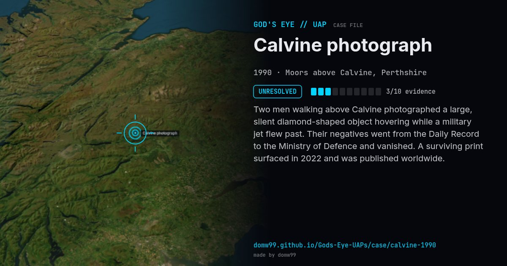

Calvine photograph
UNRESOLVED

Two men walking above Calvine photographed a large, silent diamond-shaped object hovering while a military jet flew past. Their negatives went from the Daily Record to the Ministry of Defence and vanished. A surviving print surfaced in 2022 and was published worldwide.
Explanation
The MoD never explained it; proposed explanations include a rock reflected in water and a hoax. The photographers have never been identified.
What was seen
Shape: Large diamond hovering; a Harrier jet nearby
Witnesses: Two unidentified walkers
Duration: ~10 minutes
Sources
Browse
- United Kingdom
- 1990s
- Unresolved
- Photo and video cases
- Official government documents
- Photographs
- Triangles and V shapes